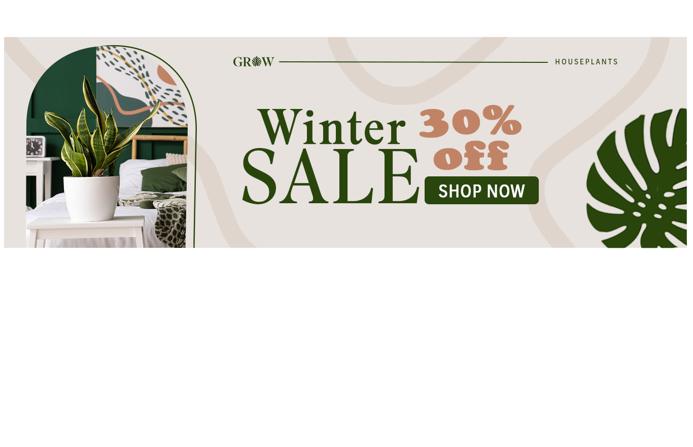
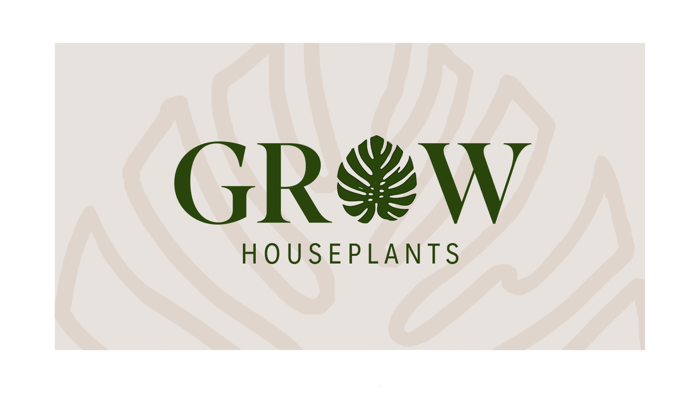
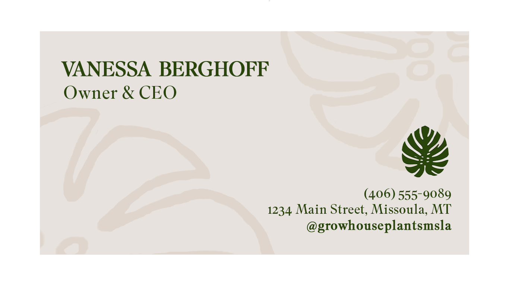

For this project, I created a complete branding package for a fictional startup, including a logo, business card, and social media banner ad. My fictional startup idea was Grow, a houseplant shop. I chose a branding style of earth tones mixed with quasi-retro and minimalistic accents. My brand values the nurturing of indoor plants and community. My target audience is plant-lovers who also want to feel connected to their neighbors and shop locally. The goal was to establish a brand that feels like a natural, pleasant, open space for the community to thrive, and by extension, purchase houseplants to nourish in their own homes.


